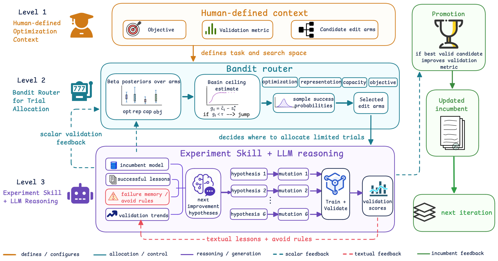
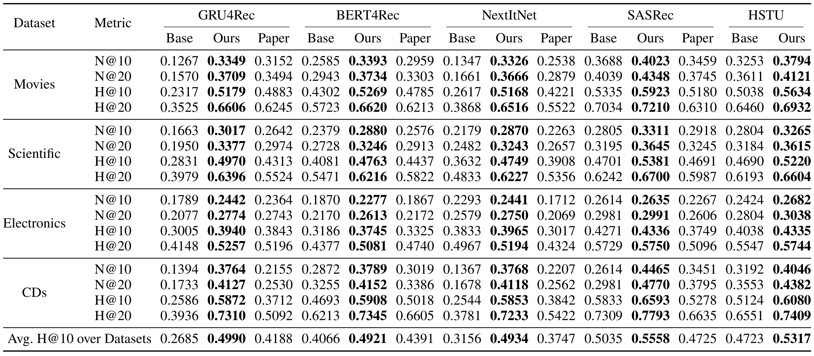
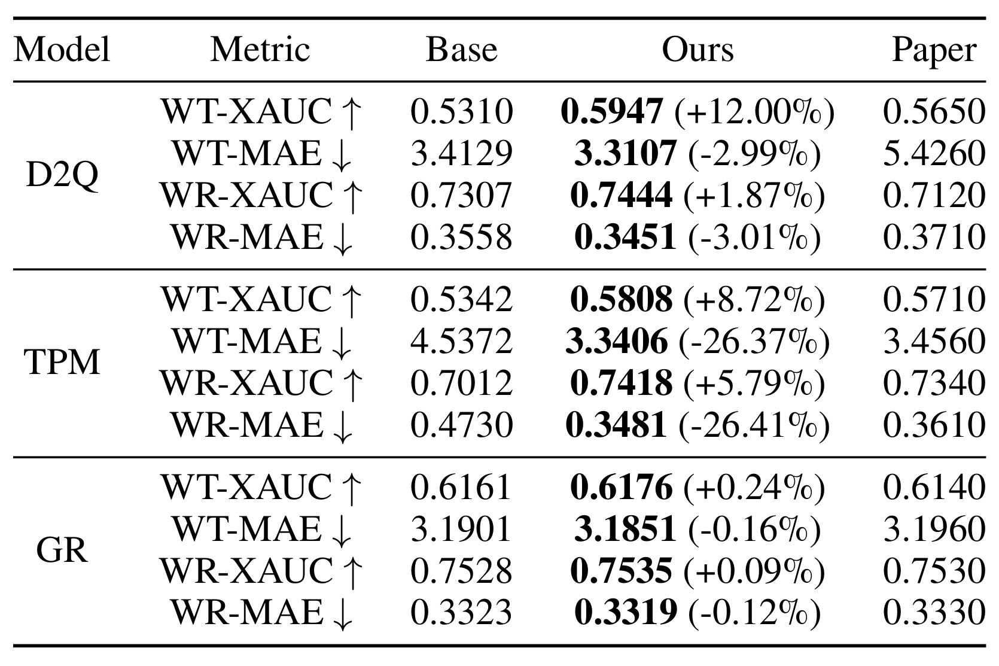
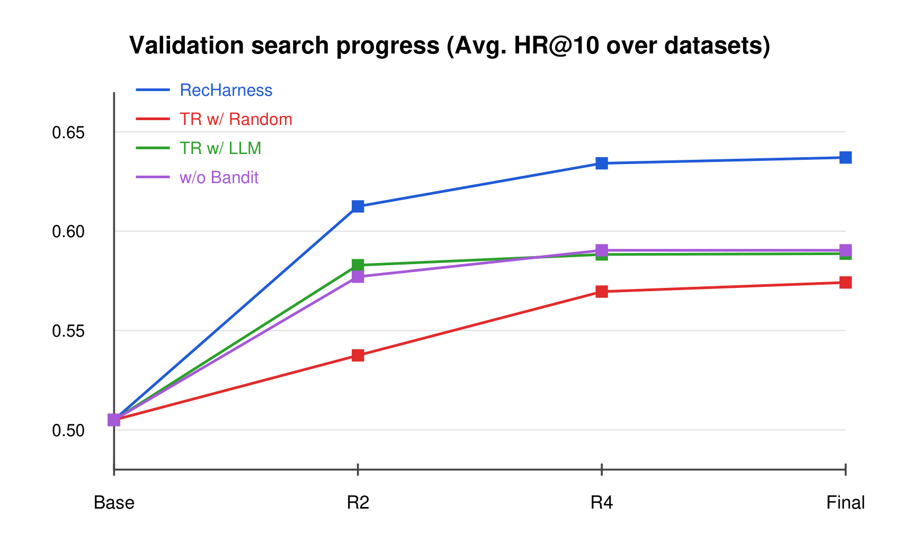
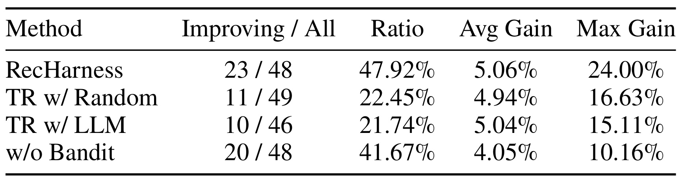
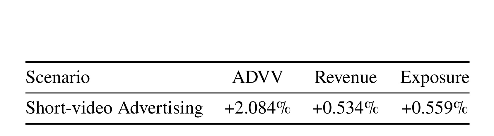

RecHarness：Bandit 路由的自演化推荐系统 Agent 框架
RecHarness 的英文原题是 RecHarness: A Bandit-Routed Agentic Harness for Self-Evolving Recommender Systems。论文由佐治亚理工学院 Haoran Ling 与快手团队合作完成，公开于 2026 年 7 月 31 日；本文以 arXiv 论文入口 为唯一论文入口。作者已公开并可核验 RecHarness 官方代码仓库。这项工作的重点不是让 Agent 从零发明一个推荐模型，而是把已有推荐代码库上的连续试验，改造成一个有预算、有方向路由、有长期反馈、也允许结构跃迁的自动优化循环。
现代推荐模型仍高度依赖工程师反复调整结构、目标函数和训练策略；如果让 LLM 同时决定“下一步改哪个方向”和“具体怎样改代码”，有限且昂贵的训练预算会被发散、噪声较高的探索消耗。单独保留最终验证分又会丢失日志、收敛状态和失败模式所携带的结构化反馈。
1. 背景和问题
推荐模型优化与普通一次性代码生成不同。输入并不只是一个数据集和一句任务说明，而是一套可以运行的训练代码、训练/验证切分、业务相关指标，以及许多相互耦合的选择：backbone 用 GRU、卷积还是 Transformer，层数和 embedding 维度怎样配，pooling 是否要换，loss 是否重写，正则与学习率如何调，特征在什么位置交互。每次候选修改都必须真正生成代码、启动训练、读取日志并跑验证，因此一次错误方向不只是“回答不好”，而是实打实消耗 GPU 时间。更麻烦的是，适合弱 GRU4Rec 的改动未必适合强 HSTU，适合 next-item 的方向也未必适合 watch-time 排序，所谓“最佳修改”依赖当前 incumbent、已有改动与任务指标，无法用一张固定超参数网格覆盖。
传统 HPO 或 NAS 可以在预定义数值空间和结构模板里搜索，却很难表达“重写 loss”“替换序列编码器”“改变 pooling 语义”这类代码级动作。通用 MLE Agent 则走向另一个极端：LLM 读取日志后自由提出下一版程序，搜索树、搜索图或语言式梯度可以保留更多语义，但方向选择也交给了同一个生成模型。在论文的设定里，方向空间包含 optimization、representation、capacity、objective 等不同 edit dimensions；如果 LLM 一边解释上一轮、一边决定下一臂、一边写 patch，它可能被近期文本诱导，反复尝试熟悉但低收益的动作，也可能在几轮内频繁跨方向，使每个方向都来不及积累可比较的证据。
RecHarness 的切入点因而是一个职责拆分：把“去哪里搜”交给显式 bandit router，把“在该方向里提出什么假设并怎样落成代码”交给 LLM。 前者只读取可核对的标量验证反馈，用跨轮次的 Beta posterior 决定有限 trial 应投给哪些 arms；后者读取当前最优实现、成功经验、失败规则、近期日志和验证趋势，在已经选定的 arm 内生成具体 hypothesis 与 executable mutation。这样并没有否定 LLM 的推理价值，而是限制其自由度：LLM 负责高维、不可枚举的代码空间，经典决策机制负责低维、可解释的试验分配。
另一个难点是局部最优。incumbent-based search 很省样本，因为所有候选都从当前最佳版本出发，不必一再从冷启动模板重走旧路；但连续做 learning rate、dropout、局部 feature fusion 等小改动，迟早会进入收益平台期。此时若结构 arm 永远关闭，系统无法跨出当前 basin；若结构大改随时开放，又会让昂贵且初期可能掉点的候选挤占日常 trial。论文因此把 arms 划成 local 与 jump 两组，用最近若干轮的 incumbent 改进率判断是否开放 jump，并允许结构候选在若干轮局部 retuning 后再接受或拒绝，而不是只看结构改动的第一跳。
这篇论文的研究问题可以更精确地写成三个子问题。第一，怎样在总 GPU-time 有限的条件下，把每轮并行候选分配给更可能有效、但仍保留不确定性的修改方向？第二，怎样同时使用标量分数和文本日志，又不让文本总结悄悄覆盖可审计的 posterior evidence？第三，怎样识别局部 basin 已接近上限，并给高影响结构修改一个公平的延迟评估窗口？RecHarness 的贡献正是把这三个问题连成同一套控制循环，并在公开数据集和一个工业广告场景中给出证据。
与“自演化推荐系统”这一宽泛表述相比，论文实际边界很清楚。人仍要定义任务、验证指标、可用 arms 和资源预算；框架并不自行扩大产品目标，也不保证生成代码没有 silent bug。它做的是在人工划定的合法空间里自动分配试验、生成修改、验证候选和沉淀经验。因此它更接近一个 validation-guided engineering harness，而不是能够脱离人类目标设定、自主改变推荐系统的通用 Agent。
2. 方法
2.1 有限预算下的 incumbent、trial group 与 edit arms
RecHarness 从初始实现 (f_0)、训练/验证数据、任务指标 (M) 和 trial-runtime budget 出发。一次 trial 的最小闭环是：对代码实现做 mutation，训练得到参数或 checkpoint，再在验证集上计算指标。论文特别强调实现而不是抽象网络，因为成本同时包含 LLM 生成、代码执行、训练和验证；候选若无法运行，也会留下错误日志并占用本轮资源。
符号解释：$f$ 是一份可执行推荐实现，$D_{\mathrm{train}}$ 与 $D_{\mathrm{val}}$ 分别为训练和验证切分，$\omega_f$ 是训练后参数或 checkpoint，$M(f)$ 是该实现的验证指标。这个定义把“代码看起来合理”和“真实训练后有效”分开：router 的任何成功证据都必须等训练与验证结束后才产生，编译失败、训练发散或指标下降都不能靠 LLM 自评被包装成进展。
符号解释：$T$ 是推荐任务，$\mathcal S$ 是合法实现空间，$h(T,s)$ 衡量实现 $s$ 在任务上的质量，$C(s)$ 是生成、执行、训练和验证的总成本，$B$ 是全局预算；$G_t$ 是第 $t$ 轮并行选择的 arms，$c(f_{t,a})$ 是 arm $a$ 下候选的 trial 成本，$C_t$ 是该轮消耗。式子说明目标不是无约束找最高分，而是在预算耗尽前让少量候选尽可能产生有效改进；论文实验把每个模型的总 GPU-time 固定为 43,200 秒。
arms 不是具体 patch，也不是单个标量超参，而是可解释的修改维度。顺序推荐中的例子包括学习率策略、dropout 或 weight decay、embedding 维度、层数与注意力头、pooling、特征、loss；工业场景还可把 feature injection、fusion position、training configuration 设为 local arms，把 sequence encoder upgrade 设为 jump arm。人定义 arms 是 RecHarness 可控性的来源，也同时是它能发现什么的上限。
符号解释：$\mathcal A$ 是当前任务的全部 edit arms，$K$ 是方向数；$\mathcal A_{\mathrm{local}}$ 表示在当前 basin 内细化的低风险方向，$\mathcal A_{\mathrm{jump}}$ 表示可能改变结构、跨越 basin 的高影响方向，两者互斥。这个分区并不预先判定某个 jump 一定更好，只规定它何时有资格参与路由，从而避免昂贵结构试验在每一轮都与日常局部调参争抢预算。
搜索始终围绕 incumbent 展开。令 (f_t^\star) 为第 (t) 轮开始前验证最好的实现，LLM 只在已选 arm 内、相对这个版本生成候选；轮末只有可执行且验证分严格更高的候选才晋升。这样上一轮的有效 patch 会自然成为下一轮上下文，而无效候选不会污染主分支。
符号解释：(mu_\phi) 是冻结 LLM 驱动的 mutation operator，输入包括 incumbent (f_t^\star)、选中 arm (a)、长期 Experiment Skill (m_t) 与近期日志/验证轨迹 (ell_t)；(f_{t,a}) 是具体代码候选，(s_t^\star=M(f_t^\star))，(Delta_t(a)) 是相对 incumbent 的增量，(V_t) 是本轮有效候选集合。严格 promotion 让 best-so-far 单调不降，但也意味着验证噪声可能把偶然高分固化，因此独立测试集仍必须与搜索隔离。

Figure 1 把职责边界画得很清楚。Level 1 由人给出 objective、validation metric 和 candidate edit arms，说明框架不会自主改写优化目标。Level 2 维护各 arm 的 Beta posterior，结合 basin ceiling 决定 local 或 jump 是否可选，再采样 success probability，把有限 trial 分给若干方向。Level 3 才让 Experiment Skill 与 LLM 工作：incumbent、成功 lesson、failure memory/avoid rules 和 validation trends 共同形成下一组 hypothesis，随后生成 mutations、训练并验证。蓝绿色虚线把标量分数送回 router，红色虚线把文字 lesson 写回长期上下文，绿色路径只把真正改进的候选晋升为新 incumbent。最关键的防混淆点是：文字记忆帮助“怎样改”，但不直接篡改“哪个 arm 的 posterior 更好”。
2.2 Thompson 路由、组内比较与二元奖励
router 要把连续验证分转成适合 Beta-Bernoulli 更新的成功/失败信号。RecHarness 先计算候选相对 incumbent 的增量，再在同一并行组内标准化。一个 local trial 只有同时满足三项才记为成功：代码有效；其增量高于同组平均；最终分不低于历史 incumbent。这样 reward 不只奖励“没崩”，也不把弱于同批候选的微小波动当作正证据。
符号解释：$\widehat A_t(a)$ 是 arm $a$ 在本轮组内的标准化优势，$\epsilon$ 防止组内方差接近零时除零，$r_t(a)\in\{0,1\}$ 是 posterior 更新用的二元 reward，$\mathbb I$ 为指示函数。这个 reward 是 incumbent-conditioned 且会随上下文变化：同一 arm 在旧 backbone 上成功，不代表在已改过多轮的新 incumbent 上仍有固定成功率；Beta 统计只是有限阶段的局部证据，不是永久真值。
符号解释：$\alpha_a,\beta_a$ 汇总 arm $a$ 的成功与失败证据，$\widetilde\theta_a$ 是本轮从 Beta posterior 抽出的成功概率样本，$\mathcal A_t$ 是当前允许选择的 arms，TopG 选出样本最大的 $G$ 个方向并行执行。高成功 arm 更常被利用，数据少、posterior 不确定的 arm 仍可能抽到较大值而被探索；更新只发生在实际 trial 返回后，因此比直接要求 LLM 阅读一段历史并“猜下一个方向”更可追踪。
这套设计还有一个容易忽略的实验公平性条件：并行组中的候选共享同一个 round-start incumbent，组内标准化才有相对可比性。如果候选从不同父版本出发，$\widehat A_t$ 会把父版本差异混进 arm reward。论文的隔离 workspace 与 round-based promotion 正是在工程上保护这个条件；它同时让代码 crash、训练异常和分数下降可以被统一记录，而不破坏 incumbent。
2.3 Experiment Skill 驱动 LLM 假设与可执行代码编辑
bandit 选中的是 optimization、representation 或 objective 这类语义方向，真正的代码差异仍无法枚举。RecHarness 在 arm 被选定后，把当前 incumbent、近期成功 edit、被拒绝方向、失败原因、验证趋势和紧凑训练日志组织成 Experiment Skill，再让 LLM 形成具体 hypothesis 与 patch。路由缩小开放搜索空间，LLM 则保留对日志、接口、训练动态和代码结构的语义推理能力。 成功 trial 被蒸馏为可复用 lesson；invalid、harmful 或 crash 的 trial 形成 avoid rules，降低相同接口错误与已知低收益修改的复发概率。
符号解释：$m_t$ 是第 $t$ 轮的长期 Experiment Skill 文本状态，集合中记录每个已选 arm、生成的实现、验证分和执行信息 $e_{t,a}$，后者包括 status、error message 与紧凑训练日志；Summarize 将新证据压缩到 $m_{t+1}$。它影响后续 mutation operator $\mu_\phi$，却不直接更新 $\alpha,\beta$。这种双通道隔离避免了“总结文本说某方向很好”便跳过实际验证证据，也保留了标量分数无法表达的失败原因。
训练时，LLM 参与每个候选的假设与代码生成，候选完成真实训练后才进入 promotion；推理或线上服务时，RecHarness harness 本身不必成为每次请求的实时组件，最终部署的是筛选出的推荐模型版本。也就是说，Agent 主要增加离线迭代成本而非必然增加 serving latency。风险则转移到自动编辑的正确性：日志摘要可能遗漏 silent bug，验证分可能被数据泄漏抬高，长期 memory 也可能把一个任务中的经验错误迁移到另一个任务，所以代码审查、隔离测试和最终独立评估仍不可省略。
2.4 Basin-aware jump 与局部 retuning
仅靠 local arms 会在当前结构附近迅速收敛，也可能长期没有大收益。RecHarness 用长度为 (W) 的窗口计算 incumbent 平均改进率；当它不高于阈值 ( au) 时，把 jump arms 加入当前可选集合。注意 (J_t=1) 只是“允许 bandit 考虑 jump”，并不强迫该轮一定跳。若 structural candidate 被选中，框架再从该分支做至多 (R) 轮 local retuning，以解决大结构刚替换时尚未适配学习率、融合位置或正则的问题。
符号解释：$\widehat v_t$ 是最近 $W$ 轮 incumbent 的平均进步速度，$\tau$ 是 basin saturation 阈值，$J_t$ 控制 jump arms 是否开放；$f_{t,r}^{(a)}$ 是从 jump arm $a$ 的结构候选出发、经过第 $r$ 轮局部 retuning 得到的最佳实现，$R$ 是 retuning 上限，$\delta_{\mathrm{jump}}>0$ 是相对跳前 incumbent 的接受 margin。延迟准则给结构变化适配机会，但 $W,\tau,R,\delta_{\mathrm{jump}}$ 本身也会影响试验成本与误判概率。
这个模块补上了短期 exploitation 与长期结构探索之间的断层。若阈值过松，jump 频繁开放，系统会重新变成高成本的发散搜索；若阈值过严，local arm 的小幅噪声改进可能一直推迟结构升级。论文工业案例展示了一个符合设计意图的路径：局部 feature injection、fusion position 和 training configuration 多次未产生稳定收益后，router 才开放并选择 sequence encoder upgrade，随后 LLM 在这个方向里利用历史失败记录形成 intra-sequence self-attention 候选。
3. 实验结果
3.1 数据、指标与 trial budget
离线实验覆盖两类推荐场景。第一类是 Amazon Reviews 的 Movies、Scientific、Electronics、CDs 四个顺序推荐数据集，分别约有 11,947/23,627/27,601/18,481 个用户和 144,071/266,164/292,308/284,695 次交互；目标模型包括 GRU4Rec、BERT4Rec、NextItNet、SASRec、HSTU 五种序列建模范式。第二类是密集用户—视频交互的 KuaiRec，用 D2Q、TPM、GR 三个模型预测 watch-time、watch-ratio 与排序目标。合计八个模型，但“跨两个场景和八个模型”不等同于八个独立业务平台：Amazon 是四个数据子集，KuaiRec 是一个公开数据场景。
Amazon 采用 leave-last-out：最后一个 item 用作测试，倒数第二个用于验证，更早交互用于训练；每个验证/测试样本由一个正例与 99 个采样负例组成，报告 HR@10/20 和 NDCG@10/20。KuaiRec 报告 WT-XAUC、WT-MAE、WR-XAUC、WR-MAE，其中 XAUC 越高越好、MAE 越低越好。搜索期间只允许验证反馈影响 arm posterior、候选生成和版本晋升，测试集在搜索结束后使用一次，这是避免 Agent 对测试集过拟合的关键口径。
符号解释：$m$ 是被评估的模型或方法变体，$D_A$ 是四个 Amazon 数据集的集合，$|D_A|$ 为数据集数，HR@10 是前十命中率。Table 3 最后一行的 Avg. H@10 是对数据集等权平均，不按用户数或交互数加权，因此它适合概括跨域一致性，但不能替代每个数据集的逐项指标。
所有模型使用相同的总 GPU-time budget：43,200 秒。每次 run 从 cold-start template 开始，先执行一个 baseline trial，再在候选 arms 上搜索；每个候选运行在隔离 workspace，轮内通常并行多个 trials，剩余预算不足以支撑下一组时停止。论文没有把“trial 数固定相同”作为全部主实验的统一口径，因为不同模型和候选的训练时长可能不同；真正受控的是 GPU 时间。SASRec 消融则进一步固定为相同 GPU-time budget、每轮四个并行 trial，并对搜索轨迹取三次运行均值。
3.2 Amazon：跨五个 backbone 的主结果
Table 3 同时给出 Base、Ours 与 Paper。Base 是 cold-start template；Ours 是 RecHarness 在受限预算中得到的版本；Paper 是 Kim 等人在 2025 年报告的对应结果，用于外部参照，不是由 RecHarness 同一次实验重新训练出的随机种子对照。表中数值为三次运行平均，N/H 分别代表 NDCG/HR，最后一行汇总四个数据集的 Avg. HR@10。

最醒目的结果出现在较弱的 GRU4Rec：Avg. HR@10 从 0.2685 提到 0.4990，论文换算为相对 +85.85%；CDs 的 H@10 从 0.2586 到 0.5872，Movies 从 0.2317 到 0.5179。强一些的 HSTU 也从平均 0.4723 到 0.5317，论文称相对 +12.58%。BERT4Rec、NextItNet、SASRec 的平均 H@10 分别由 0.4066、0.3156、0.5035 提升到 0.4921、0.4934、0.5558。跨四个数据集、四个 cutoff 指标看，Ours 普遍高于 Base，说明受益并非只集中在单个 dataset 或单个 HR@10 汇总值。不过提升幅度与起点强弱明显相关：弱模板留下更多可修复空间，不能把 GRU4Rec 的 85.85% 外推为成熟模型的常规收益。Paper 列也不是统一复现控制组，因此更适合用来确认结果量级，而不是进行严格的显著性比较。
从可复现角度还要注意，框架优化的是代码与训练策略的联合空间，Table 3 不告诉我们每个 backbone 最终采用了哪些完全相同或不同的 patches。它证明“同一 harness 能服务不同模型族”，但不能单凭终值判断 bandit、LLM hypothesis 或某个具体结构分别贡献了多少；这一因果拆分需要后续的固定 SASRec 消融与 trial-level 统计。
3.3 KuaiRec：收益随基线强弱变化
KuaiRec 把评估从 next-item 命中扩展到 watch-time 和 watch-ratio。D2Q、TPM、GR 的 inductive bias 与基础强度不同，表中括号是 Ours 相对 Base 的变化。XAUC 与 MAE 的方向相反，阅读时不能把负百分比一律当成退步：MAE 下降才是改善。

D2Q 的 WT-XAUC 从 0.5310 到 0.5947，相对 +12.00%；WT-MAE 从 3.4129 降至 3.3107，WR-XAUC 从 0.7307 到 0.7444，WR-MAE 从 0.3558 降至 0.3451。TPM 的变化更集中在误差：WT-MAE 从 4.5372 降到 3.3406（-26.37%），WR-MAE 从 0.4730 降到 0.3481（-26.41%），同时两个 XAUC 也分别 +8.72% 和 +5.79%。强 GR 的四项仍按正确方向变化，但仅有 WT-XAUC +0.24%、WT-MAE -0.16%、WR-XAUC +0.09%、WR-MAE -0.12%。这组结果的重要性不是“每次都有大涨”，而是把 ceiling effect 显式暴露出来：baseline 越成熟，自动搜索能找到的剩余空间越窄。Ours 也略高于 Ma 等人的 Paper 列，但不同实现与训练条件可能存在差异，不应把小数点后千分位差距解读为稳定优势。
Table 3 与 Table 4 合在一起支持的是迁移性而非万能性：arms 和 validation metric 可以随场景重定义，同一 bandit—LLM 控制结构仍能运行；实际收益依赖初始 codebase、候选 arms 和预算。KuaiRec 上强 GR 的小幅变化尤其提醒，若每个 trial 训练成本很高，自动化收益必须与额外 GPU 成本一起核算，单看“所有指标方向一致”仍不足以证明投入产出比。
3.4 Thompson 路由究竟贡献了什么
消融固定 SASRec 作为底层模板，在四个 Amazon 数据集上比较四种策略：完整 RecHarness；把 Thompson Routing 替换成均匀随机 arm 的 TR w/ Random；让 LLM 根据历史文字反馈直接选 arm 的 TR w/ LLM；去掉预定义 edit dimensions、让 LLM 自由提修改的 w/o Bandit。四者共享 validation-driven update rule、GPU-time budget 与每轮四个并行 trial，搜索曲线对三次运行取平均，因此差异更接近“方向分配机制”而不是资源多少。

Figure 2 从共同 Base 约 0.5050 开始。完整 RecHarness 在 R2 已到 0.6125，R4 到 0.6342，Final 仍略增；TR w/ LLM 和 w/o Bandit 在 R2 约 0.58，之后停在约 0.59，随机路由更慢，Final 约 0.575。曲线表明优势主要在早期预算分配：Thompson posterior 能迅速把 trial 投向近期更可能产生改进的结构化方向，同时抽样机制仍给不确定 arm 机会。LLM 直接选 arm 优于随机，说明文字反馈确实有信息；但它低于显式 posterior，支持论文关于“LLM 适合解释和生成、未必适合单独承担探索—利用”的论点。w/o Bandit 并非完全无效，只是其开放方向难以积累可比较的跨轮证据，后续 plateau 也更明显。

Table 5 把“曲线更高”拆成命中率和收益质量。RecHarness 的非 baseline trials 中 23/48 刷新 round-start best，比例 47.92%；TR w/ Random 为 11/49=22.45%，TR w/ LLM 为 10/46=21.74%。完整方法平均 gain 5.06%、最大 gain 24.00%。w/o Bandit 也有 20/48=41.67% 的较高 improving ratio，却只有 4.05% 平均 gain 与 10.16% 最大 gain。这意味着自由 LLM search 能找到不少小改动，但结构化路由更可能把预算投给高上限方向。与此同时，表中 All 的分母略有差异，且 gain 是相对每轮起始最优验证分，不是线上业务收益；它不能直接换算成“47.92% 的代码修改都可部署”。
结合两张消融证据，可以把机制结论限制在合适范围：同一 SASRec setting、同一预算和并行度下，显式 Thompson routing 比随机或 LLM 选臂更早、更频繁地找到验证改进，也比无 bandit 的开放搜索得到更高最大 gain。论文没有提供对所有八个模型逐一重复该路由消融的结果，因此“router 在任何 codebase 都同样有效”仍需额外验证。
3.5 从 arm 到生产候选：七天在线 A/B
工业场景的线上 baseline 是成熟的 shared-bottom DNN 广告排序模型，输入包括 user、item、combine-side 特征，以及六组实时用户商业行为序列。人工把 feature injection、fusion-position adjustment、training-configuration tuning 定义为 local arms，把 sequence encoder upgrade 定义为 jump arm。多次 local 尝试没有稳定收益后，router 判断搜索接近 basin ceiling，允许 jump 并选择 sequence encoder upgrade。Experiment Skill 记录到既有 HSTU 相关模块主要处理压缩后的 virtual tokens，未直接建模原始行为序列中的 item-item 关系，同时此前 feature crossing 与 fusion structure 尝试也没有稳定收益；LLM 因而提出 intra-sequence self-attention 候选。
该候选对六组实时行为序列分别应用 self-attention，再由 MLP 各压缩成 32 维向量，拼接为 192 维 representation 注入 shared-bottom ranker。论文报告它在 production offline evaluation 中令 AUC 提升 0.09%。随后作者在 10% 流量上运行 7 天在线 A/B；下面三项只复述论文报告，表中没有置信区间、p 值或逐日波动。

论文报告：ADVV（Advertiser Value）+2.084%，Revenue +0.534%，Exposure +0.559%。这张表提供了“自动搜索候选能够进入真实系统并得到正向业务指标”的案例，但证据边界必须保留。它来自单一短视频广告平台、一个最终候选、10% 流量与七天窗口；表格没有展示 guardrail 指标、长期用户反馈、实验方差或多候选重复部署，因此不能据此推断 RecHarness 在所有平台都会产生相同提升，也不能把三项同时上涨直接归因到 bandit router 的某个单独公式。更稳妥的结论是：在人设定 arms、审查候选并完成既有上线流程的条件下，RecHarness 找到的一个 sequence encoder structural jump 通过了离线筛选，并在论文报告的在线窗口内获得三项正向变化。
在线案例也解释了 jump 与长期反馈为何要同时存在。如果没有失败记忆，LLM 可能继续重复 feature crossing/fusion；如果没有 jump eligibility，sequence encoder arm 不一定被开放；如果只有 jump 而没有 arm 内语义推理，router 又无法自行发明“六组序列分别 self-attention、各压缩到 32 维、再拼成 192 维”的代码方案。三者构成一条从方向分配到结构假设、从验证到部署候选的完整链，但最终上线决策仍由生产评审和 A/B 系统约束。
4. 总结
4.1 我的判断
RecHarness 最有价值的思想不是把 bandit 和 LLM 简单拼接，而是把两类反馈放到不同控制面：标量验证结果进入 Beta posterior，回答“有限 trial 应投到哪里”；日志、错误、收敛趋势与历史 lesson 进入 Experiment Skill，回答“在已选方向里具体怎样改”。这种拆分使搜索比纯自由文本推理更可审计，也让 LLM 保留处理代码级开放空间的优势。Figure 2 与 Table 5 对这一点给出的证据比单纯主结果更扎实：显式路由不只提高最终分，还改变早期命中率和最大 gain。
另一方面，论文标题中的“self-evolving”不能理解成无人监督的无限自治。目标、指标、arms、预算、代码边界与部署流程都由人规定；系统是在这个 harness 中自迭代。它比较适合已有可靠训练—验证脚手架、单次实验昂贵、优化方向能够由专家归纳成少量 arms 的团队。若指标极不稳定、候选训练成本差异巨大、验证集容易泄漏，或业务无法接受自动 patch，那么 posterior 再漂亮也不能替代工程治理。
4.2 对推荐与 Agent 系统的工程启发
对推荐工程，第一条启发是把实验方向当成一等数据结构。backbone、objective、representation、optimization 等 arms 可以统一记录成功/失败，而不只在工单与聊天里散落。第二条是把测试集从 Agent loop 中彻底隔离，只让 validation 驱动搜索，最后一次评估才使用 test。第三条是把结构修改设成带 retuning window 的 jump，避免因第一轮没调好便过早否定新 encoder。第四条是把最终 candidate 的成本、延迟、稳定性与业务 guardrail 加进 promotion 条件；论文公式主要围绕验证指标，真实系统通常需要多目标约束。
对 LLM Agent 设计，更可迁移的是“外部决策器路由、LLM 在受限语义空间执行”的结构。它可用于 RAG 中选择检索策略、训练数据治理中选择错误类型、评测修复中选择 failure cluster：方向概率由可验证 outcome 更新，LLM 负责在方向内读非结构化证据、生成操作。Experiment Skill 则应保留来源、轮次和任务边界，避免把旧任务 lesson 当成跨域真理；posterior 也应在 incumbent 或任务发生大变化时考虑折扣、分段或重置。
4.3 局限与后续跟进
局限至少有四类。其一，arm ontology 由人给出，漏掉关键方向就无法搜索，划分太粗又会让 posterior 混合不同 patch 的成功率。其二，二元 reward 丢失了改进幅度与训练成本，5.06% 与 0.1% 的成功对 $\alpha$ 都只加一，未来可以研究 cost-aware、non-stationary 或 contextual bandit。其三，Experiment Skill 的摘要可能遗漏 silent bug、数据泄漏与失败上下文，且论文没有系统量化 memory 压缩误差。其四，在线证据只有一个平台、一个候选和七天窗口，缺少显著性、长期效应、用户侧 guardrail 与重复实验。其五，每个候选都要真实训练，43,200 秒预算说明自动化并不免费；若候选间运行时差异很大，只按 trial success 更新也可能偏向便宜或幸运方向。
后续最值得做三项复现。第一，运行官方代码，在固定 SASRec 配置上重现四种路由的三次轨迹，并逐轮核对 $G_t$、$\widehat A_t$、$r_t$ 与 posterior，确认 Table 5 的分母差异来自哪些 invalid 或 baseline trials。第二，在相同 GPU-time 下加入成本归一化 reward、posterior decay 与滑窗重置，观察强 GR/HSTU 这类接近 ceiling 的模型是否更受益。第三，审计 Experiment Skill 的原始日志到 summary 的信息损失，故意注入接口错误、训练发散和验证泄漏，检查 avoid rules 是否真的降低复发。若要推进线上，还应预先登记 ADVV、Revenue、Exposure 之外的 guardrails，并把 7 天结果延长到更长窗口，报告置信区间和逐日稳定性。
总体看，RecHarness 给出了一条务实路线：不要求 LLM 学会可靠地做所有决策，也不把推荐模型限制在可枚举模板；它用 bandit 管预算，用 LLM 管假设与代码，用 jump/retuning 管结构跃迁，用长期文本反馈避免重复失败。论文的离线覆盖与单次在线案例足以证明这套 harness 值得复现，但尚不足以证明它可以无审查地接管工业推荐迭代。